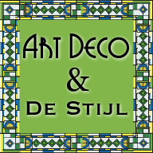

Orientation in Suprematism & Constructivism
Origin
 While the Dadaists were busy being pessimistic and cynical due to the historical situation of the time, other avant-garde artists were using art as a method to create change towards Utopian ideals. After the Russian Revolution, Russian artists absorbed Cubism and Futurism to coin a term called Cubo-Futurism.
While the Dadaists were busy being pessimistic and cynical due to the historical situation of the time, other avant-garde artists were using art as a method to create change towards Utopian ideals. After the Russian Revolution, Russian artists absorbed Cubism and Futurism to coin a term called Cubo-Futurism.
A short time later, Kazimir Malevich, a Russian avant-garde, was the pioneer of geometric abstract art. He used abstraction, and non-objective geometric patterns in a style and artistic movement he called Suprematism. Suprematism is not about a feeling, but of a sensation.
Constructivism emerged when a series of artists rejected the idea of "art for art's sake" and began devoting themselves to the practical arts of industrial design and other visual communications. Constructivism called on artists to stop producing useless things and to use art for industry and social causes. It had three main principles: tectonics, texture, and construction. Happening during the time of the Russian Revolution, Constuctivism called for order and organization to be restored.
Period
1917 to 1922 in Russia
Aesthetic Characteristics
Suprematism uses elemental shapes and color to create form. These concrete elements constructed together created expressive qualities arising not from a pictorial image but from pure content and arrangement. Abstraction became based on sensation and this movement is abstract. This is abstract. Reductive simplicity, moving towards complete abstraction.
Constructivism took the abstraction of Supremacism one step further and created an, as Lissitzky said “interchange station between painting and architecture.” Supremacist design elements were transformed into political statements through choice of color and three dimensional illusions that receded and preceded the picture plane.
Influential Artists
Kazimir Malevich
 Supremacist Compositions Here abstraction is based on the reductive simplicity, moving towards complete abstraction creating a sense of sensation. He use entirely non representation art forms (squares) and space, with radical visionary values. There is an absolute rejection of materialism and the objective world. Malevich abstract art replaced the familiar world of naturalism, everyday objects, and events, to form an aesthetic blueprint for a utopian world and for superior forms of personal expression, evoking a sense of sublime boundlessness. Here he goes deeper until he comes to pure emptiness, pure being. His interest is in spirituality.
Supremacist Compositions Here abstraction is based on the reductive simplicity, moving towards complete abstraction creating a sense of sensation. He use entirely non representation art forms (squares) and space, with radical visionary values. There is an absolute rejection of materialism and the objective world. Malevich abstract art replaced the familiar world of naturalism, everyday objects, and events, to form an aesthetic blueprint for a utopian world and for superior forms of personal expression, evoking a sense of sublime boundlessness. Here he goes deeper until he comes to pure emptiness, pure being. His interest is in spirituality.
El Lissitsky
 Beat the Whites with the Red Wedge The political piece shows the red wedge (a symbol of the Bolshevik Army) slashing through the "white" forces that were in power. The text dynamically floats around the image, reinforcing movement of the cause. A student of Malevich, Lissitsky was perhaps the most prolific Constructivist. His work transformed Supremacism into the political statements Constructivism became known for. He believed that the Russian Revolution would create a new world order in which technology, art, social engineering and communism would provide for society and its needs.
Beat the Whites with the Red Wedge The political piece shows the red wedge (a symbol of the Bolshevik Army) slashing through the "white" forces that were in power. The text dynamically floats around the image, reinforcing movement of the cause. A student of Malevich, Lissitsky was perhaps the most prolific Constructivist. His work transformed Supremacism into the political statements Constructivism became known for. He believed that the Russian Revolution would create a new world order in which technology, art, social engineering and communism would provide for society and its needs.
Aleksandr Rodchencko
 Spacial Construction #12 Rodchencko, a non-objective artist, constructed things using new material, drawing in space. Space is as important as elements in a constructivist work. The piece was created out of a single piece of plywood, transforming a single plane into a three dimensional object representative of orbits. Rodchencko was interested in lines writing in 1921
Spacial Construction #12 Rodchencko, a non-objective artist, constructed things using new material, drawing in space. Space is as important as elements in a constructivist work. The piece was created out of a single piece of plywood, transforming a single plane into a three dimensional object representative of orbits. Rodchencko was interested in lines writing in 1921
"in the line a new worldview became clear: to build in essence, and not depict (objectify or non-objectify); build new, expedient, constructive structures in life, and not from life and outside of life."
Results
By 1922 the political situation and tolerance became hostile and overtook the artists abilities to work an the advancement of the styles. Both styles had, however, a lasting effect in the art world, particularly in graphic design.
Create Constructivism
Create a Constructivist Art piece:
- Materials
- colored paper
- glue
- piece of canvas
- scissors
- protractor
- Lay the piece of canvas out on the floor
- Use the scissors to cut out triangles, rectangles and other geometric shapes.
- Assign meanings to each color of paper.
- Spend time thinking about an arrangement of form and color that creates an overarching meaning.
- Glue the geometric shapes to the canvas.
Test Your Suprematism/Constructivism Knowledge
-
Suprematism was founded in Mongolia by Kazimir Malevich.
- True
- False
-
Which artist used space as a canvas?
- Kazimir Malevich
- Aleksander Rodchencko
- El Lissitzsky
-
Which of these words best describes the aesthetic characteristics of Suprematism and Constuctivism?
- expressionistic
- realistic
- dreamy
- colorful
- pure abstraction
Think you know Art in the 1920's? Take the test!
Match the images with the keyword boxes by dropping the image underneath the keywords.
anti art, rebellion against conventional thought and sought to bring absurdity into all aspects of existence. DuChamp, Schwitters and Man Ray were influential. Chance associations and found object art.
dream art, interested in dreams as the art of uncovering the unconscious, automatic drawing and chance techniques, representational objects. Paul Klee and Max Ernst were notables. New tools to visualize the unconscious.
political art, geometric abstract art, not about a feeling, but of a sensation, tectonics, texture, and construction, elemental shapes and color to create form. Malevich, Lissinsky and Rodchencko art defined the movement.
Faith in Machines, designs for cars, trains, ships, planes and buildings, integration of art in life. Georges Vantongerloo, Piet Mondrian and Gerrit Rietveld were important artists. Universal laws of equilibrium and harmony for art, streamlined, geometric shapes. Utopian society created through art.

